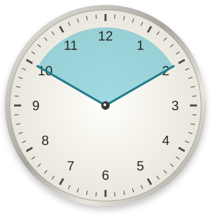
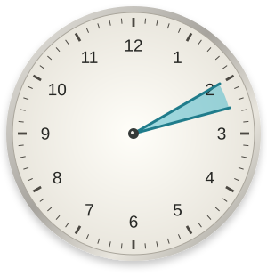
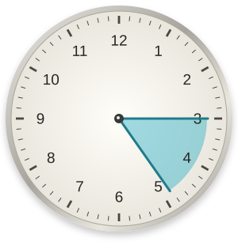
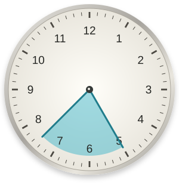

Atomic Habits
Uma experiência do Zé, uma lente de James Clear.
No dia 22, continuou horrível.
Eu acordei às 2h da manhã durante 21 dias para criar o hábito de ler. No dia 22, continuou horrível. Parei.
A vida acontecia em casa depois do trabalho.
Era 2020, na primeira onda da pandemia em Manaus. Estava tudo fechado. Eu trabalhava no Bom Dia Amazônia. Depois do trabalho, não queria assistir à TV nem ler noticiário. Aquilo já era meu trabalho e era angustiante.
Eu queria criar hábitos mais saudáveis. Alguém recomendou a leitura como um hábito matinal, um "hábito base". Não sei dizer exatamente o que esperava que isso mudasse no restante da minha vida. Lembro de querer alguma coisa para fazer naquele contexto, porque a minha realidade era tão doentia, que eu queria uma realidade paralela.
Para ler, eu tirei mais tempo do sono.
O jornal começava às 5h. Eu precisava entrar às 3h e normalmente acordava às 2h30. Para encaixar a leitura e o banho, passei a acordar às 2h. Ia dormir frequentemente entre 22h e 23h.




O livro era O poder do hábito. Eu já achava que livros enrolavam muito até chegar ao propósito. Lia me perguntando: "Tá, mas na prática o que isso significa?".
Eu acordava com muito sono. Às vezes, cochilava enquanto lia. Passava os olhos pelas páginas e não retinha nada de útil. Segui outra dica: anotar para melhorar a leitura. Então eu lia e escrevia. Mesmo assim, não percebia conhecimento ficando comigo.
Eu esperava que o sofrimento tivesse prazo.
Alguém tinha me dito que um hábito se formava em 21 dias. Imaginava que sofrer era normal no começo. Com a repetição, eu teria menos sono, gastaria menos energia e a leitura seria prazerosa.
| Minha expectativa | Minha experiência |
|---|---|
| Acordar ficaria mais fácil. | Continuava acordando com muito sono. |
| Anotar ajudaria a aprender. | Lia e escrevia, sem perceber retenção útil. |
| No dia 22, seria prazeroso. | Continuou horrível. Parei. |
Era como levantar peso na academia em gravidade zero, esperando tonificar os músculos. Eu fazia o movimento, mas o efeito que procurava não aparecia.
“Eu sou preguiçoso.”
O primeiro dia foi horrível, o segundo pior, o terceiro devastador, o quarto horripilante. Não teve um dia em que começou a melhorar. Mas eu consegui cumprir os 21 dias.
Quando desisti, a conclusão que tirei foi: "Eu não sou esse tipo de pessoa que vai ter hábito de leitura, eu sou preguiçoso".
Hoje considero o contexto daquela tentativa. Foi o período em que mais adoeci mentalmente. Na época, ainda não sabia que tinha TDAH. Queria criar um hábito saudável enquanto dormia muito pouco e vivia um período de sofrimento.
Hoje, eu começo por uma necessidade.
Estou lendo Sem esforço porque tenho criado coisas que acredito estarem exigindo mais esforço do que deveriam. Procuro repertório para pensar sobre essa questão e analisar se posso aplicar o que o autor acredita.
Quando fico sem ler, não me culpo. Se algo no livro já mudou minha forma de pensar e agir fora dele, considero como "lido", sem me cobrar chegar à última página.
Também passei a reconhecer descanso, repertório e conversa como motivos para ler. Minha experiência não resolve como outra pessoa deve ler. Um horário fixo pode fazer sentido para ela.
| Naquela tentativa | Na forma como leio hoje |
|---|---|
| Chegar aos 21 dias. | Buscar repertório para uma necessidade. |
| Cumprir o ritual de madrugada. | Considerar o que aproveito fora do livro. |
O que Atomic Habits ajuda a examinar aqui?
O livro que eu tentava ler era O poder do hábito. As ideias de James Clear entram agora, como uma lente para examinar aquela experiência.
Em Atomic Habits, Clear descreve um ciclo de sinal, desejo, resposta e recompensa. Suas quatro leis propõem tornar o hábito evidente, atraente, fácil e satisfatório. Leia a explicação do autor.
- SINAL Evidente Perceber a oportunidade.
- DESEJO Atraente Ter motivo para agir.
- RESPOSTA Fácil Reduzir o esforço exigido.
- RECOMPENSA Satisfatório Encontrar algo que favoreça repetir.
Eu repetia a ação, mas passava pela leitura com sono e sem perceber o aprendizado que buscava. Esperava que a satisfação chegasse depois de cumprir o prazo. O próprio Clear contesta a promessa dos 21 dias.
Essa história não permite concluir que todo hábito precisa ser agradável desde o começo. Ela permite examinar o que a contagem dos dias estava deixando de fora.
Tamo junto.
Hábitos que Cabem na Vida
Skill autoral de José Carlos Amorim, com fundamentos de Atomic Habits. Sem afiliação nem endosso de James Clear.
Como usar
Diga: "Quero encaixar a leitura na minha rotina". O agente usa o contexto disponível para criar um cartão do hábito e ajudar a registrar, ajustar ou retomar a prática.
Pedido de ativação
Cole na conversa com seu agente. O pedido aponta para uma revisão específica do repositório.
Baixe o pacote completo e anexe ao agente que aceita skills. Ele inclui o procedimento, as referências, os modelos e o script opcional.
Baixar pacote ZIPAbra o arquivo, copie o conteúdo e use na conversa ou nas instruções do projeto. As referências estão incluídas.
Baixar arquivo colávelMarque depois de instalar no seu agente. A confirmação fica salva neste navegador.